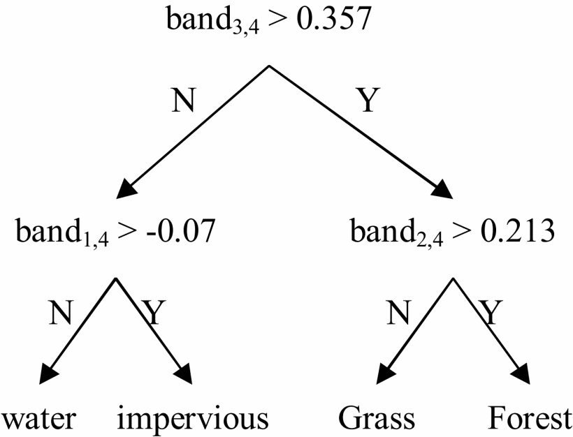
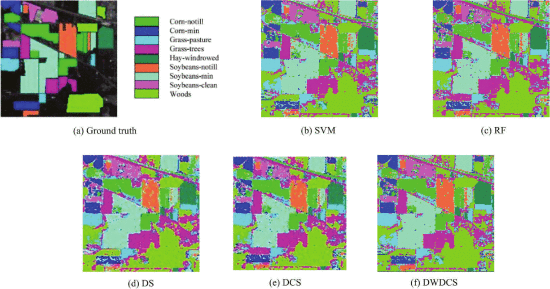

6 week7-Classification
6.1 Summary
Remote sensing classification is based on the principle of dividing data into meaningful parts, defining categories based on specific objectives, and slicing the data in different ways.
I have summarised case studies of remote sensing classification applications in order to visualise the purpose and significance of the work.
| Case | Research interests | Sensors | Classified object | Research target |
|---|---|---|---|---|
| 1 | Urban expansion | Landsat | Urban and non-urban areas | Analysing urban growth over time |
| 2 | Air pollution and land cover | Sentinel-3 (sea and land surface temperatures) and Sentinel-5 (major air pollutants) | Pollutants and land use | Understanding the relationship between pollutants and land use change |
| 3 | Urban green space | Medium-resolution imagery, hyperspectral data or various sensors such as LiDAR | Urban green space | For biodiversity, recreation and urban planning |
| 4 | Illegal logging and forest monitoring | Combination of sensors such as Landsat, MODIS | Targeted areas affected by illegal logging | Investigation of environmental offences |
| 5 | Forest fire | Landsat TM | Fire hazard area | Creating Fire Hazard Maps |
6.1.1 Classification method
- Classification and regression trees (CART)
- Classification trees
Principles of building a classification tree:
| No | Principle |
|---|---|
| 1. start node | The top of the tree is the root node and contains all the data |
| 2. Segmentation criterion | The Gini impurity criterion is used to select the best segmentation. |
| 3. Leaf nodes | When further splits no longer increase the purity of a node, the node becomes a leaf node and corresponds to a decision result |
| 4. Pruning | To avoid overfitting, branches that do not significantly contribute to the model prediction can be removed |

| Features | Definitions |
|---|---|
| 1. Binary or multiple branches | Each node can have two or more branches |
| 2. Decision rules | At each node, the tree uses features of the data to form rules |
| 3. Recursive splitting | The tree starts at the root node and recursively splits the dataset according to the best split point of the feature values. |
| 4. Node purity | The quality of the segmentation is evaluated using Gini impurity to maximise the purity of each node (when leaves with mixed results are encountered, the segmentation with the greatest improvement in purity can be chosen) |
- Regression trees
Unlike classification trees, which predict discrete values, regression trees predict numerical outcomes, such as the amount of pollution or test scores.
Principles of building a regression tree
| No. | Principle |
|---|---|
| 1. Predicting continuous variables | Predicting a continuous value through the tree structure |
| 2. Decision rules | Rules are formed at each decision node based on input features and then numerical outputs are predicted based on these rules. |
| 3. Segmentation Criteria | The total squared error (SSR) is used to decide where to segment the data in order to obtain the smallest possible error at each node. |
| 4. Tree Growth | The dataset is grown by recursively dividing it into more homogeneous subsets. Each split aims to maximise the uniformity of the nodes and minimise the error. |

- Limitation
CART is easily overfitted without proper constraints and pruning and the main strategies to avoid overfitting are:
| Strategy | Definition |
|---|---|
| 1. Limit the growth of the tree | Set a minimum number of observations (e.g. 20) on the leaves of the tree to prevent the tree from becoming too complex |
| 2. Pruning | Aims to remove nodes to reduce model complexity, the above nodes have the characteristic of increasing model complexity without significantly improving predictive ability. Cost Complexity Pruning is used to balance the fit and complexity of the tree by considering the complexity parameter alpha |
| 3. Cross-validation | Repeat the modelling process on different training and test datasets, use cross-validation (e.g.10-fold cross-validation) to assess the generalisation ability of the model, and select the model with the lowest error on the test data |
- Random forest (RF)
RF are an integrated learning method, mainly for classification (and regression), which runs by building a large number of decision trees during training and outputting the classes
| No | Step | Principle |
|---|---|---|
| 1 | Bootstrap sampling | For each tree, a random sample of data (70%) is selected for replacement and 30% of the data is left out, called out-of-bag (OOB) data |
| 2 | Random feature selection to build the tree | A random subset of features is selected at each split to introduce additional randomness, ensuring that the trees are de-correlated and adding to the overall diversity |
| 3 | Aggregation | Prediction by aggregation integration |
| 4 | Out-of-bag error estimation | Data that was omitted during tree construction can be used to obtain an unbiased estimate of classification accuracy as out-of-bag error |
| 5 | Assessment of feature importance | Determined by the extent to which each feature reduces weighted impurities in the tree, averaged over all trees |

- Advantages
Random forests combine the results of individual trees into a more general model to deal with overfitting. It has more advantages：
| Advantages | Definitions |
|---|---|
| 1. Robustness | Combining the predictions of many trees is more robust and accurate than a single decision tree. |
| 2. Versatility | Tree models are able to deal with complex non-linear relationships by branching multiple times, which provides a basis for dealing with classification problems (outputting the plurality of categories) and regression problems (outputting mean predictions). |

- Maximum likelihood method (MLM) and Support Vector Machine (SVM)
- Comparison of the MLM and SVM
Applicability: MLM is suitable for cases where statistical properties are obvious and a priori information is available, while SVM is more powerful when dealing with datasets with complex boundaries or non-linear distributions (higher dimensional).
Robustness: Compared to MLM, which is more sensitive to outliers in the training data, SVM is usually more robust to outliers when using soft spacing.
The characteristics of each are as follows：
| Feature | Definition |
|---|---|
| Decision Making | By comparing the feature statistics (e.g. mean and standard deviation) of a given pixel with the probability density function of each land cover type, the category with the highest probability is selected for the classification of that pixel |
| Threshold Setting | Supports setting a probability threshold below which pixels are not classified to prevent classification uncertainty |
| Prior probability | Integrates a prior probability information, where the pre-known land cover type can be used in the classification process |
| Feature | Definition |
|---|---|
| Decision Making | Finds a maximum interval (determined by the nearest support vector) to distinguish between two classes of training data |
| Soft Interval | Allow a certain amount of classification error, determine how much misclassification is allowed by cross validation |
| Kernel Trick | If the data is not linearly separable, map the data to a higher dimensional space via a kernel function to achieve linear separability |
| Hyperparameters | Adjust hyperparameters such as the penalty coefficient and the kernel function parameter to optimise |
6.2 Applications
The methods of remote sensing classification have been in a developmental stage. The initial classification of remote sensing images was actually achieved through visual interpretation, mainly based on human experience and knowledge to interpret basic elements and specific signs to achieve the purpose of identifying the type of feature (Jia et al. 2011).
In order to meet the requirement of providing classification accuracy, remote sensing researchers have been working on classification techniques and methods. For example initially developed various unsupervised and supervised classification techniques learnt this week, which can also be classified as parametric vs. non-parametric classifiers (Xu et al. 2005). In fact advanced classification algorithms such as neural networks, support vector machines, and expert systems have been widely used for a long time in the practice of classification such as urban planning and natural disaster monitoring.
What intrigued me was the integration of multiple learned classification techniques. Du et al. (Du et al. 2012) combined the advantages of support vector machines in solving the difficulties of small sample sizes and poor generalisation with the advantages of random forests being able to deal with hyperspectral imagery, and used a dynamic selection of a more appropriate specific classifier for each unclassified pixel to conduct AVIRIS image from Indian Pines Classification accuracy experiments were conducted on AVIRIS image from Indian Pines. It was found that the classification accuracy of the combination of the two classifiers was more accurate than the classification results with Support Vector Machines and Random Forests respectively. Such a study provides a solution to improve the classification accuracy of hyperspectral classification, as well as a reference for us to understand the characteristics and differences between the two specific classifiers.

However, remote sensing image classification methods are still affected by many factors, such as complex surface information, and classification applications still face challenges. For example, Cheng et al. (Cheng et al. 2020) summarised the challenges in scene classification such as high diversity within classes, high similarity between classes, large differences in object proportions, and coexistence of multiple ground objects. Despite the rapid development of deep learning technology applications, as well as the existence of 1. large datasets without clean labels, fully supervised learning is difficult to work; model generalisation is not strong and many other problems. This illustrates the huge gap that still exists between the current machine and human understanding level performance. Therefore continued optimisation of deep learning driven remote sensing image classification in the future remains a worthwhile development.
6.3 Reflection
This week I was exposed to an important part of processing remote sensing data, which is remote sensing image classification. I think this technique is practical and varied.
Remote sensing image classification is actually the classification of each pixel point or each area in an image into different categories according to some rules based on their spectral features, spatial structure features or other information in different spectral bands. This is particularly important in the application of remote sensing data, because it is a conversion step to use remote sensing images as a tool to solve specific geographic problems, and I believe that every application of remote sensing will use this step of classification.
Classification is diverse and there are different classification methods and approaches to choose for different classification tasks, from maximum likelihood classification to random forests and support vector machines, I find that research is needed to explore how to choose the right classification algorithms to ensure the accuracy of remote sensing data analysis. The choice of algorithm depends not only on the data characteristics (e.g., is it hyperspectral remote sensing?) , but also depends on the needs of the specific problem.
Due to the wide range of spatial and temporal characteristics of remote sensing data, I believe that the trend of combining remote sensing classification with deep learning will continue in the future. I am very willing to learn and optimise classification methods, and although it is now possible to download finished remote sensing data that have been classified by different teams, e.g. land cover data, I believe that it is very valuable to have access to first-hand data and to process it.
6.4 References
Cheng, G. et al., 2020. Remote Sensing Image Scene Classification Meets Deep Learning: Challenges, Methods, Benchmarks, and Opportunities, IEEE Journal of Selected Topics in Applied Earth Observations and Remote Sensing, årg. 13, s. 3735–3756.
Du, P. et al., 2012. Hyperspectral remote sensing image classification based on the integration of support vector machine and random forest [Online].
Jia, K. et al., 2011. A Review of Classification Methods of Remote Sensing Imagery, SPECTROSCOPY AND SPECTRAL ANALYSIS. Beijing: Office Spectroscopy & Spectral Analysis, årg. 31, nr. 10, s. 2618–2623.
Misra, S. & Li, H., 2020. Chapter 9 - Noninvasive fracture characterization based on the classification of sonic wave travel times [Online]. I: S. Misra, H. Li & J. He red. Machine Learning for Subsurface Characterization. Gulf Professional Publishing, s. 243–287.
Wen, X., Hu, G. & Yang, X., 2008. CBERS-02 Remote Sensing Data Mining Using Decision Tree Algorithm [Online].
Xu, M. et al., 2005. Decision tree regression for soft classification of remote sensing data, Remote Sensing of Environment, årg. 97, nr. 3, s. 322–336.